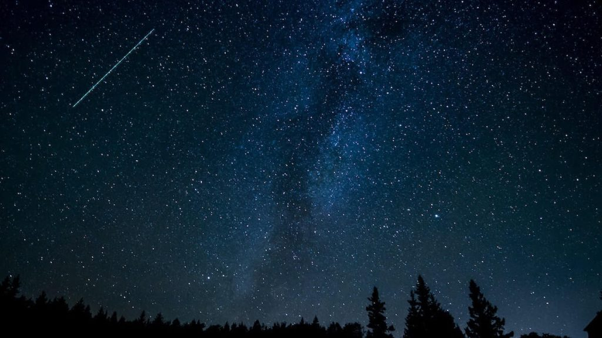
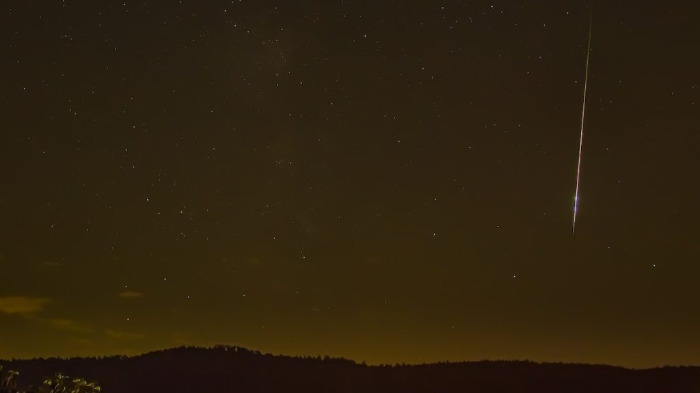

အီတာ အေကွာရစ် ကြယ်မိုးဟာ လာမယ့် မေလ ၅ ရက်နဲ့ ၆ ရက်နေ့ ညတွေမှာ ကမ္ဘာ့လေထုထဲကို အမြောက်အများ ဝင်ရောက်လာမှာ ဖြစ်ပါတယ်။
ဒီရက်တွေဟာ လပြည့်ညနဲ့ တိုက်ဆိုင်နေတာမို့ ကောင်းကင်မှာ လဟာလဲ ထိန်လင်းစွာ တောက်ပနေမှာ ဖြစ်ပါတယ်။ ဒါပေမယ့် အေတာ အေကွာရစ် ဟာ ဒီရက်တွေမှာ အမြောက်အများ ဆက်တိုက် ဝင်ရောက်လာဖို့ ရှိတာမို့ သူ့ကို မြင်တွေ့နိုင်ဖို့ အခွင့်အလမ်း ပိုများနေမှာ ဖြစ်တယ်လို့ ဆိုပါတယ်။
အခု အီတာ အေကွာရစ် ကြယ်မိုးဟာ ဘီစီ ၃၉၀ ခုနှစ်က ဟေလီ ကြယ်တံခွန် (Comet Halley) ကနေ လွင့်ထွက်လာခဲ့တဲ့ အပိုင်းအစ တွေကြောင့် ဖြစ်ပါတယ်။ အခုနှစ်မှာ ကြယ်ကြွေတဲ့ နှုန်းကလဲ ပုံမှန်ထက် နစ်ဆလောက် ပိုများနေမှာ ဖြစ်ပါတယ်။ ဒါ့ကြောင့် အမြင့်ဆုံး အချိန်မှာ တစ်နာရီကို ကြယ်ကြွေ ၁၂၀ လောက်ထိကို ကျဆင်းတာကို မြင်တွေ့နိုင်မှာ ဖြစ်ပါတယ်။
၂၀၂၃ ခုနှစ်အတွက် အီတာ အေကွာရစ် ကြယ်မိုးကို ကမ္ဘာ့ တောင်ခြမ်းကနေ အများအပြား မြင်တွေ့ ကြရမှာ ဖြစ်ပါတယ်။ ဒါပေမယ့် ကမ္ဘာ့ မြောက်ခြမ်းကလဲ အချို့ ဒေသတွေ ကနေ တွေ့မြင် ကြရမှာပါ။ ဒါပေမယ့် ကမ္ဘာ့ တောင်ဖက်ခြမ်းလောက် များများစားစား မြင်တွေ့ရမှာ မဟုတ်ပဲ တစ်နာရီကို ကြယ်ကြွေ ၁၀ လုံးကနေ အလုံး ၃၀ ကြားလောက်ပဲ မြင်တွေ့နိုင်မယ်လို့ ဆိုပါတယ်။
ဒီ ကြယ်မိုးကို မြင်တွေ့ဖို့ ဆိုရင် မြေပြင်မှာ မီးထိန်ထိန် လင်းနေတဲ့ အရပ်မျိုးကို ရှောင်ရှားပြီး ကြည့်ရှုဖို့ လိုအပ်မှာ ဖြစ်ပါတယ်။ သူ အဓိက ထွက်ပေါ်ရာ မူရင်းအရပ်က Aquarius နက္ခတ်ကနေ ထွက်ပေါ်လာတာ ဖြစ်ပေမယ့် တကယ်တမ်း မှာတော့ ကြယ်မိုးတွေ ရွာကျတာကို ကောင်းကင် အနှံ့လုံးမှာ တွေ့ကြရမှာပါ။
ဒီ ကြယ်မိုးကို ရှာဖွေဖို့ဆို မှောင်မိုက်တဲ့ အရပ်မှာ ပက်လက် ကုလားထိုင်လေး တစ်လုံးချပြီး စောင့်ကြည့်ဖို့ လိုအပ်မှာ ဖြစ်ပါတယ်။ ကြယ်မိုးကို တွေ့ဖို့ နက္ခတ်ကြည့် မှန်ပြောင်းတွေ မလိုအပ်ပါဘူး။ နောက်ပြီး ညအမှောင်မှာ မျက်လုံး ကျင့်သားရဖို့ အနည်းဆုံး အချိန် နာရီဝက်လောက် ညအမှောင်ထဲ နေပေးဖို့ လိုအပ်ပါတယ်။

မြန်မာ နိုင်ငံကဆို ရန်ကုန် နဲ့ မန္တလေး အပါအဝင် မြန်မာနိုင်ငံ မြောက်ဖျားဒေသ အထိ တစ်နိုင်ငံလုံး ကနေ မြင်တွေ့နိုင်မှာ ဖြစ်ပါတယ်။ Aquarius ကြယ်စု ထွက်ပေါ်ရာ အရှေ့ဖက် နဲ့ အရှေ့တောင်ဖက် ကြား ရပ်ဝန်းကို အဓိကထားပြီး စောင့်ကြည့်ရမှာ ဖြစ်ပါတယ်။ ဒါပေမယ့် အခြား အရပ် တွေကနေလဲ ပေါ်လာနိုင် တဲ့အတွက် Aquarius ကြယ်စု အနီးဝန်းကျင် တွေကိုလဲ မကြာခန မျက်စေ့ကစားပေးဖို့ လိုပါမယ်။
ဒီ ကြယ်မိုးကို ကြည့်ဖို့ အကောင်းဆုံး အချိန် ကတော့ မေလ ၆ ရက် နဲ့ ၇ ရက် နေ့တွေမှာ နံနက် ၂ နာရီလောက် ဝန်းကျင်ကို ထပြီး ကြည့်မယ်ဆို အကောင်းဆုံး ဖြစ်ပါတယ်။ အဲ့သည် အချိန်ကနေ နေထွက်ချိန် အထိ ကြယ်မိုး အများအပြား ကြွေကျမှာ ဖြစ်ပါတယ်။
အီတာ အေကွာရစ် ကြယ်မိုးကို အခုအချိန် ကတဲက စပြီး ကြည့်လို့ ရနေပါပြီ။ ဒါပေမယ့် အခုအချိန်မှာ ကြယ်ကြွေတာ နည်းသေးတဲ့ အတွက် အချိန် အတော်ယူပြီး စိတ်ရှည်ရှည် ရှာဖွေမှ ၁ လုံးစ ၂ လုံးစ မြင်တွေ့ရမှာ ဖြစ်ပါတယ်။
Aquarius ကြယ်စုဟာ အရှေ့ဖက် အရပ်မှာ ရှိတာမို့ အရှေ့အရပ်ကို ဦးစားပေး စောင့်ကြည့်ဖို့ လိုပါမယ်။ နောက်ပြီး မြန်မာပြည်ကဆို ကြယ်စုက မိုးကုပ် စက်ဝိုင်းနား ကပ်နေတာမို့ အထပ်မြင့်မြင့် အဆောက်အဦတွေ၊ သို့ တောင်ကုန်း၊ သို့ လယ်ကွင်းပြင် တွေကနေ အရှေ့ဖက်ကို လှမ်းမျှော်ကြည့်ဖို့ လိုပါမယ်။

ကမ္ဘာက ကြယ်တံခွန်ရဲ့ အကြွင်းအကျန်တွေ ပျံသန်းနေတဲ့ လမ်းကြောင်းထဲ ဝင်ရောက် သွားတဲ့ အခါ ဒီ အကြွင်းအကျန် ကျောက်ခဲ၊ ဖုန်နှုန့်နဲ့ ရေခဲ့တုံး လေးတွေဟာ ကမ္ဘာ့လေထုထဲကို ပြန်ဝင်ရောက် ချိန်မှာ မီးလောင်ကျွမ်း ပျက်စီး သွားကြပါတယ်။ ဒီ အခါ ဒီ အပိုင်းအစေ လေးတွေ လောင်ကျွမ်း ဝင်ရောက် လာတာကို ကြယ်မိုး အနေနဲ့ ကမ္ဘာက မြင်ကြရတာ ဖြစ်ပါတယ်။
ဒီ ကြယ်မိုးရွာမယ့် အပိုင်းအစ တွေကို ချန်ရစ် ထားခဲ့တဲ့ ဟေလီ ကြယ်တံခွန် ကတော့ ၇၆ နှစ်နေမှ တစ်ကြိမ် ကမ္ဘာကို ပတ်နေတာပါ။ သူ နောက်တကြိမ် ကမ္ဘာနား ပြန်ရောက်ဖို့ဆိုတာ လာမယ့် ၂၀၆၁ ကျမှ ဖြစ်လာတော့မှာ ဖြစ်ပါတယ်။
ဟေလီ ကြယ်တံခွန်ဟာ အင်္ဂလိမ် နက္ခတ် ပညာရှင် အက်ဒ်မွန် ဟေလီ (Edmon Halley) ကို ဂုဏ်ပြု ပြီး အမည် ပေးထားတာ ဖြစ်ပါတယ်။ သူဟာ ၁၅၃၁၊ ၁၆၀၇ နဲ့ ၁၆၈၂ တို့မှာ ပေါ်ထွက်ခဲ့တဲ့ ကြယ်တံခွန် တွေကို အသေးစိတ် လေ့လာပြီး ဒီ ကြယ်တံခွန် ၃ ခုဟာ အတူတူ ပဲ၊ တစ်ခုထဲပဲ ဖြစ်တယ်၊ ဒါ့ကြောင့် လာမယ့် ၁၇၅၈ ခုနှစ်မှာ ဒီ ကြယ်တံခွန်ကို ထပ်မံ တွေ့မြင်ရအုံးမယ် ဆိုပြီး ကြိုတင် ဟောကိန်း ထုတ်ခဲ့ပါတယ်။
သူဟာ ဒီ ကြယ်တံခွန် ထပ်မံ ပေါ်လာတာကို မြင်မသွား ခဲ့ရပါဘူး။ ဒါပေမယ့် သူဟောကိန်း ထုတ်တဲ့ အတိုင်း မှန်နေတာမို့ သူ့ကို ဂုဏ်ပြုတဲ့ အနေနဲ့ ဒီ ကြယ်တံခွန်ကို ဟေလီ ကြယ်တံခွန် ရယ်လို့ အမည် ပေးခဲ့တာ ဖြစ်ပါတယ်။
Ref: Eta Aquarid meteor shower 2023: Where, when and how to see it | Space